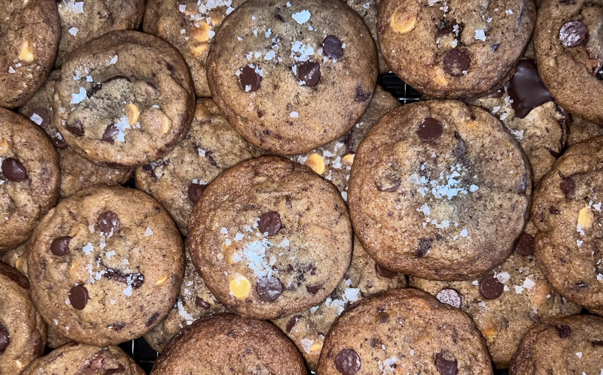

Flaky Salt BEST Cookies

The best cookies in the world (seriously)!
Ingredients
For The Butter Mix:
- 2 cups (4 sticks) (454 grams) of unsalted butter
- 1/4 cup (32 grams) nonfat dry milk
- 3 teaspoons (6 grams) of espresso powder
- 4 tablespoons (60 grams) of heavy cream or whole milk
- 1 1/4 cup (250 grams) of granulated sugar
- 1 3/4 cups (350 grams) of dark brown sugar
For The Dry Mix:
- 3 cups (375 grams) of all-purpose flour
- 2 cups (250 grams) of bread flour
- 2 teaspoons cornstarch
- 4 teaspoons of Diamond Crystal Kosher salt (12 grams of salt total, spoon measurements may vary based on type of salt used)
- 2 teaspoons of baking soda
Others:
- 2 eggs
- 2 egg yolks
- 2 teaspoons vanilla extract
- 12 oz. dark chocolate bar, chopped
- 1 cup milk chocolate chips
- Maldon's flaky sea salt (optional)
Directions:
- Brown the butter.*In a saucepan or a non-stick skillet, melt the butter over medium heat. Once it starts foaming, pour in the nonfat milk powder evenly, and stir the butter frequently until you see brown bits appear at the bottom and there is a nutty aroma (5-7 minutes, but it just depends). Pour into a heatproof bowl, making sure to scrape the brown bits off with a rubber spatula.
- Add the espresso powder and the milk or heavy cream to the butter and give it a stir. Let it come to room temperature (about 20 minutes or so). This is crucial, as you’ll dissolve the sugar if the butter is still warm.
- While the butter mixture is cooling, work on the dry mix.
- Add the all-purpose flour, bread flour, cornstarch, salt, and baking soda into a large mixing bowl. Whisk until combined. Set aside.
- Return to the butter mixture: Add the granulated sugar and brown sugar to the cooled butter. Using a hand mixer or a stand mixer on high, beat until the mixture is light and fluffy. It won’t totally come together, but it should have a much lighter color than when you had just added the sugar to the butter. Scrape down the sides of the bowl as needed.
- Add the vanilla extract, eggs, and egg yolks and beat until fully incorporated (this should only take a minute or two). Scrape down the sides of the bowl as needed.
- Add the dry mixture in. Prepare to do this in intervals so that you don't get flour all over the kitchen. (Pro tip: after dumping some of the dry mix in, use a rubber spatula to partially fold it into the butter before turning on the mixer. This will prevent splattering). You don't need it to be COMPLETELY mixed. Some flour sticking out is a good thing! It will be incorporated in the next step.
- Add the chocolate chunks and chips, and fold into the mixture. The mixture might seem dry, but don't worry, it will hydrate overnight.
- Cover the bowl with plastic wrap, and leave in the fridge (ideally for 24 hours, and up to 48 is all good)**
- When ready, take the bowl out and leave at room temperature for 15 minutes, and preheat the oven to 350 degrees.
- Scoop out 45 grams of dough and roll into a ball.***
Spread out evenly on a baking sheet (ideally with 3 inches between each ball) and bake for 13 minutes on a middle rack. They might look somewhat raw at the center; don't worry, they will come together as they cool.
- Sprinkle with flaky sea salt. Let cool for at least another 3 minutes before carefully transferring to another wire and letting it come to room temperature. These cookies (like all cookies) taste great straight out of the oven, but I promise you that they’re much better at room temperature. ****